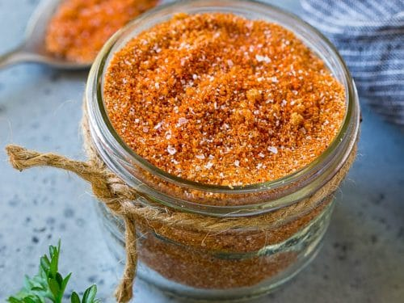

BBQ Rub
Home

Description
This BBQ rub works best with pork, but is great on chicken or beef. The main ingredient
is brown sugar, but has a slight kick as well. Double or triple the recipe for larger cooks
or to store for later, but keep in mind the brown sugar may start to clump up over time.
Ingredients
- 1/2 cup brown sugar
- 1/4 cup paprika
- 1 tbsp:
- salt
- chili powder
- garlic powder
- onion powder
- 1 tsp:
- cayenne pepper
- cumin
- ground mustard (mustard powder)
Steps
- In a mixing bowl, add brown sugar first.
- Add the rest of the ingredients, stirring with a whisk until fully mixed.
- Only use as much as you need, storing the remaining rub in mason jar or tightly
sealed container. Brown sugar will clump up over time.